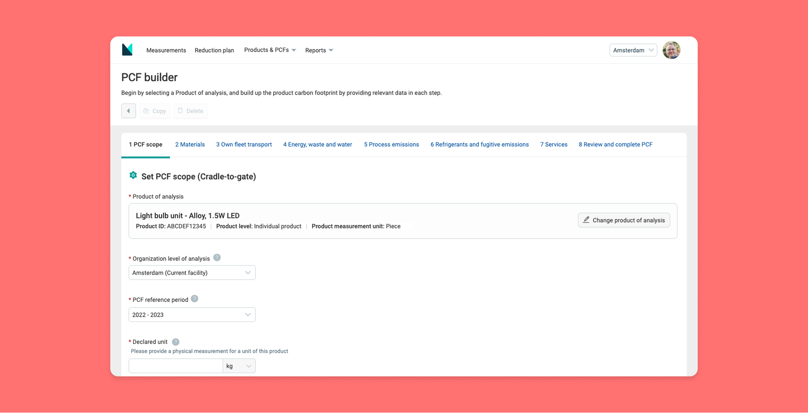

PRODUCT CARBON FOOTPRINT CALCULATOR
Global legislations means that corporations and manufacturers are faced with new requirements to report Product-level Carbon Footprints (PCFs) for goods traded across relevant regions. For Manufacture 2030 (M2030) this presented a new opportunity to help their users with tools to satisfy that data requirements.
As a Product designer, I led the end-to-end design process of the PCF Builder. Working with stakeholders to thoroughly research the problem space and created usable designs for a complex process to help users calculate and better understand their products’ carbon emissions.

- User experience design
- User interface design
- User research
- Competitor research
- Prototyping
- Usability testing
- MVP sucessfully launched in Q4 2024
- Piloted by 14 major corporations
- Hundred of PCF results calculated
- Positive ratings averaging 4.5 of 5 from users
- Numerous proactive enquires from manufacturers to adopt the tool.
Discovery
As PCF is a very specialised subject, the first step I took was to perform a variety of research to really understand how M2030 can make a difference.
Research activities
- Survey and interviews with target users. (Details)
- Consulting with sustainability expert to understand technical PCF calculation requirements. (Details)
- Exploring current tools to understand how M2030 could make it better. (Details)
Key learnings
- 78% of potential users have ‘zero’ to ‘basic’ level of PCFs understanding.
- There are many technical standards for PCF calculations. They are often at early stage of development and the requirements evolved over time.
- Existing tools often work at 2 extremes in the trade off between data quality vs. simplicity of calculation:
- Highly automated AI based estimation, with results that are generalised.
- Highly manual calculations with high effort, with results that are product specific.
Design
Mapping out the user flow
Based on the result of the research I drafted a user flow, with a focus on creating a modular process that would allow users without specialist PCFs knowledge to perform the calculation in a step by step manner.

Explore design options
From there we moved to the prototyping process, exploring different options for the overall feature architecture, and the design of each individual calculation step:
1. Considering how to make the large number of required data input manageable. Would a) splitting the process into independent blocks help compartmentalise each task and help user understanding? Or b) A ‘simple one-page builder’ would help streamline the workflow?

2. Worked with sustainability experts to design each step of the calculation. With a conscious effort to strike a balance between data quality vs. simplicity of use, by automating the most laborious tasks (eg. sourcing reliable emission factors), without compromising the accuracy of the end results.

Test & refine
User testing
Once we had initial designs for the key pages, they were put in front of a range of users for feedback and help me to iterate the design through multiple rounds of testing.
Some key feedbacks
- For low-knowledge users, the preferences is for a highly guided workflow as expected, where a singular entry point with a step by step calculator is.
- Several key concepts needed better explanations. (e.g. UNCPC code, Declared units)
- For more knowledgeable users, the order of calculation could be adjusted to better align with the steps in a manufacture value chain. (Test results snippet)
Design refinement
Based on the feedback, we fine-tuned the feature’s architecture, and refined the design to better explain concepts that user found difficult to understand.


MVP design

The MVP was developed and launched in Q4 2024. With this new capability, M2030 was able to engage with many international corporations to run pilot programs with their supply-chain to build PCFs, and take a real practical step to understand and report carbon emissions at a product level.
MVP achievements so far (Feb 2025)
- 14 multi-national corporations* are discussing / running pilot programs. (* such as Unilever, General Motors and Haleon)
- 200+ completed PCFs calculations have been carried out.
- Positive feedbacks from pilot users, that 'it has been a great experience.' With an average experience rating of 4.5 out of 5.
- Numerous unsolicited enquiries received from manufacturers to adopt the PCF tools for their own benefits.
Continual learning / next steps
There are many directions in which further developments Where organizations can easily exchange their PCF results to make downstream calculations easier; Generate reports that satisfy legislative needs; and leverage PCF analytics to form product specific carbon reduction strategy.
On the technical front, as the calculation standards mature it will become increasingly important to maintain alignment with general standards and provide options for sector specific standards.
In addition the pilot program allowed us to monitor real usage and quickly gather customers feedback for usability improvements. All in all, the PCF calculator was an exciting first step for a new set of tools in the manufacturing sector to make real, practical environmental changes.